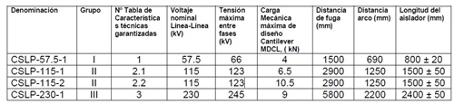
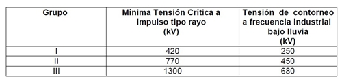
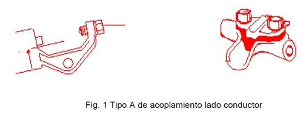
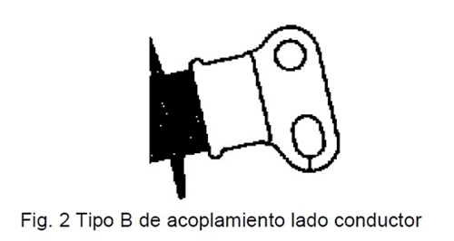
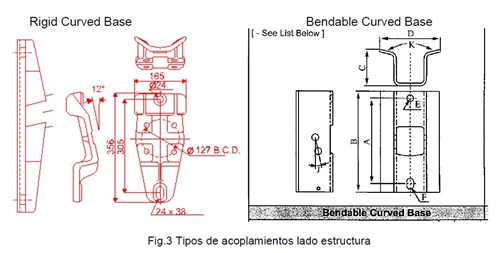
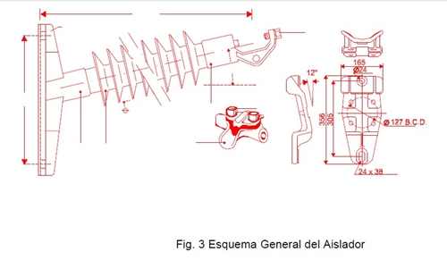
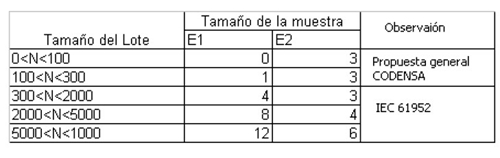

Siempre es más fácil conocer las normas ENEL-CODENSA
Rolex Rolex gold watch, compared with ordinary materials, gold watches are often expensive, but the replica rolex gold watch has the role of swiss replica watches hedging, so that it often becomes the first choice for collectors. The gold watch has value in the world, largely because the omega replica watch brand launched a commemorative limited edition watch or a replica hublot complex movement process or artistic attainments deep watches, mostly preferred gold precious metals such material. These watches tend to have a strong hedging function, therefore, Rolex Rolex gold watch reputation.

ET-AT253 Aisladores poliméricos tipo line post para líneas de alta tensión
Datos adicionales
Número de especificación
ET-AT253
Fecha de vigencia
01/04/2008
Herramientas adicionales
- Contenido Ocultar
- 1. OBJETO
- 2. NORMAS APLICABLES
- 3. REQUERIMIENTOS DE CALIDAD
- 4. CAMPO DE APLICACIÓN
- 5. DEFINICIONES
- 6. CARACTERÍSTICAS CONSTRUCTIVAS
- 6.1 GENERALES
- 6.2 DISEÑO Y CONSTRUCCIÓN
- 6.3 ANILLOS EQUIPOTENCIALES (ANILLOS CORONA)
- 6.4 OTROS HERRAJES Y GRAPAS
- 7. AISLADORES POLIMÉRICOS NORMALIZADOS
- 7.1 NIVEL DE AISLAMIENTO MÍNIMO
- 7.2 CARACTERÍSTICAS DE CONEXIÓN MECÁNICAS
- 8. DEFINICIONES DE CARACTERÍSTICAS MECÁNICAS
- 8.1 VALORES DE CARGA ASOCIADAS AL AISLADOR
- 9. IDENTIFICACIÓN DE LOS AISLADORES
- 10. INSPECCIÓN TÉCNICA Y PRUEBAS
- 10.1 PRUEBAS DE DISEÑO
- 10.2 PRUEBAS TIPO
- 10.3 PRUEBAS DE REMESA O MUESTREO
- 10.4 ENSAYOS DE RUTINA.
- 10.5 INSPECCIÓN EN FÁBRICA
- 11. PROVISIÓN BÁSICA
- 13. INFORMACIÓN TÉCNICA
- 13.1 INFORMACIÓN PARA LA PROPUESTA
- 13.2 INFORMACIÓN PARA APROBACIÓN DEL CLIENTE
- 14. GARANTÍA
- 15. TABLAS DE CARACTERÍSTICAS TÉCNICAS GARANTIZADAS
1. OBJETO
El objeto de la presente especificación, es fijar las características técnicas que deben cumplir los aisladores poliméricos tipo Line Post, a ser empleados en líneas de alta tensión existentes en Codensa S.A. ESP.2. NORMAS APLICABLES
El diseño, fabricación y pruebas, de estos aisladores así como sus accesorios, deberán cumplir con las prescripciones de la última versión de las siguientes normas:- IEC 60060-1:1989 High Voltage Test Techniques Part 1. General Definitions and Test Requirements.Pruebas técnicas de alta tensión. Parte 1. Definiciones y requerimientos técnicos.
- IEC 61952:2002 Insulators for overhead lines.Aisladores poliméricos tipo Line Post para corriente alterna con voltajes superiores a los 1000 V.
- IEC 60383-1:1993 Insulators for overhead lines with a nominal voltage above 1 000 V Parte 1. Unidades Aislador de cerámica o vidrio para sistemas a.c. Definiciones, metodos de prueba y criterios aceptables.
- IEC 60383-2:1993 Insulators for overhead lines with a nominal voltage above 1 000 V Parte 2: Cadenas aislador para sistemas a.c. – Definiciones, métodos de prueba y criterios aceptables.
- IEC 60695-11-10: 1999 Fire hazard testing Parte 11-10: Pruebas de flameo. Métodos de pruebas de flameo vertical y horizontal.
- ISO 868:1985 Plastics and ebonite Determinación e identificación de la dureza por medio de un durómetro
- ISO 3274:1996 Geometrical Product Specifications (GPS) Textura de la superficie: -Características nominales de los instrumentos de contacto.
- ISO 3452 Non-destructive testing Penetrant inspection
- ISO 4287:1997 Geometrical Product Specifications (GPS).Textura superficial: Términos, definiciones y parámetros de texturas de la superficie.
- ISO 4892-1:1999 Plastics Métodos de laboratorio a exposición de Fuentes de luz. -Parte1: Orientación general
- ISO 4892-2:1999 Plastics Métodos de laboratorio a exposición de Fuentes de luz. –Parte 2: Fuentes de Xenonarc
- ISO 4892-3:1999 Plastics Métodos de laboratorio a exposición de Fuentes de luz. –Parte 3: lámpara fluorescente UV.
- ASTM A 153 Zinc Coating (Hot- Dip) on Iron and Steel Hardware.Galvanización en caliente de herrajes de hierro y acero.
3. REQUERIMIENTOS DE CALIDAD
El oferente deberá tener implementado un sistema de calidad basado en las normas de la serie ISO-9001 año 2000, el cual cubra los procedimientos para diseño, manufactura, instalación, servicios, inspecciones y pruebas.Este sistema de calidad deberá tener la correspondiente certificación vigente.
4. CAMPO DE APLICACIÓN
Esta especificación está desarrollada para aisladores poliméricos tipo line post que se utilizarán en líneas aéreas con voltajes iguales o superiores a 57.5 kV, en ambientes normales y severos de contaminación, alto grado de humedad y neblina. Sus características deberán adecuarse a dichas condiciones de servicio.Los aisladores se instalarán en sitios con temperaturas ambientes que varían entre los – 5 °C
y los + 40 °C, bajo condiciones extremas, con alta exposición a la radiación solar, altos niveles de humedad relativa, y alturas hasta 2800 m.s.n.m.
5. DEFINICIONES
Las definiciones de los términos utilizados en esta especificación técnica, concerniente con aisladores poliméricos tipo Line Post son los expuestos en la norma IEC 61952:3-2002.El término aislador polimérico aplicado en esta especificación, es equivalente al término aislador compuesto (no – cerámico).
6. CARACTERÍSTICAS CONSTRUCTIVAS
6.1 GENERALES
Los aisladores poliméricos tipo Line Post, deberán cumplir con los requisitos de las normas indicadas en el punto 2, con las características particulares indicadas en esta especificación y lo solicitado en las tablas de características técnicas garantizadas, las que deberán ser debidamente llenadas y presentadas conjuntamente con la oferta.Todos los aisladores serán de peso liviano, resistentes a los actos de vandalismo e inmunes a daños causados por agua, rayos ultravioletas, radiación solar y efecto corona.
Presentarán aletas de diseño aerodinámico, que facilite su autolimpieza por el viento y lluvia.
6.2 DISEÑO Y CONSTRUCCIÓN
Los aisladores tipo Line Post deben estar constituidos por:Núcleo Resistente Dieléctrico de Fibra de Vidrio
Este núcleo transmite los esfuerzos mecánicos producidos por los conductores y proporciona el necesario aislamiento eléctrico.
El núcleo terminado deberá ser resistente al ataque ácido e hidrólisis, para evitar el ingreso de humedad y provocar su rotura por corrosión. Dispondrá en sus extremos de los herrajes de sujeción que se indican más adelante.
El núcleo deberá estar constituido por fibras de vidrio dispuestas dentro de una resina epóxica y resistente a la hidrólisis, de tal forma que se obtenga máxima resistencia a la tensión mecánica y eléctrica.
La distribución de las fibras de vidrio, en la sección transversal del núcleo, deberá ser uniforme, libre de vacíos y de sustancias extrañas.
Recubrimiento Polimérico Aislante del Núcleo
Alrededor del núcleo de fibra de vidrio, deberá haber un recubrimiento de aislante en goma de
silicona, de una sola pieza, sin juntas ni costuras. Este recubrimiento deberá ser uniforme alrededor de la circunferencia del núcleo, en toda la longitud del aislador, formando una superficie hidrófuga protectora, aún bajo condiciones de contaminación severa, que no se degrade en largos períodos de tiempo.
El recubrimiento aislante estará firmemente unido al núcleo de fibra de vidrio, y deberá ser suave y libre de imperfecciones. La resistencia de las interfaces entre el recubrimiento y el cilindro de fibra de vidrio será mayor que la resistencia al desgarramiento del recubrimiento del núcleo.
Campanas Aislantes
Las campanas aislantes serán construidas de goma de silicona, moldeadas bajo presión y estarán firmemente unidas a la cubierta del núcleo, por un procedimiento donde el fabricante asegure que la resistencia entre las campanas y el recubrimiento polimérico del núcleo, sea mayor que la resistencia al desgarramiento del material aislante.
Las campanas, serán suaves y libres de imperfecciones, resistentes a la contaminación, buena resistencia a la formación de caminos de descarga superficial de banda seca (tracking), a la erosión, a la temperatura, inflamabilidad y a la acción de la radiación ultravioleta.
Los aisladores serán de color gris o azul, su diseño simétrico al eje transversal del aislador y su cantidad y diámetro los adecuados para garantizar los valores eléctricos solicitados en las tablas de características Técnicas Garantizadas.
Finalmente, el ensamble completo constituirá una unidad totalmente sellada.
Los tipos de goma a utilizar serán, con aditivos de relleno totalmente libre de EPDM (Ethylene Pylene Termolyner) o de otros cauchos orgánicos.
Los tipos de goma de silicona a utilizar serán:
- HTV: Un componente de goma de silicona sólida con vulcanización a elevada temperatura, a 200 °C aproximadamente.
- LSR: Dos componentes de goma de silicona líquida que se mezclan y vulcanizan a elevada temperatura, entre 100 y 200 °C.
Acoples Metálicos de los Aisladores
Los acoples metálicos de los extremos, los cuales transmiten los esfuerzos mecánicos del conductor a un extremo del núcleo y del otro extremo del núcleo al apoyo, deberán ser de acero forjado y galvanizados en caliente de acuerdo con las normas ASTM A153, para herrajes (ferretería). Los acoples deberán estar conectadas al núcleo por medio del método de múltiple compresión radial, mínimo seis puntos, o por un sistema de relleno y sección cónica, de tal modo que asegure una distribución uniforme de la carga mecánica, alrededor de la circunferencia del núcleo de fibra de vidrio.
Otros tipos de sellos propuestos por los fabricantes, deberán ser aprobados por el cliente. El material y los métodos usados en la fabricación del herraje de extremo deben ser seleccionados para proveer apropiada resistencia y ductilidad. El forjado será uniforme en calidad y sin bordes o aristas. Los forjados deberán estar libres de grietas, bolsas de contracción, escamas, rajaduras producidas por el calor, costuras, solapaduras, costras, incrustaciones, fisuras, etc.
Sello de las Interfaces entre los Acoples Metálicos y el Núcleo
Las interfaces entre los acoples metálicos y el núcleo estará sellada por medio de un compuesto de Goma de Silicona, vulcanizado a temperatura ambiente que impida el ingreso de humedad, resistente a temperaturas extremas de -5 ºC a +60 ºC.
6.3 ANILLOS EQUIPOTENCIALES (ANILLOS CORONA)
Los aisladores tipo Line Post poliméricos para operación a partir de 220 kV deberán ser diseñados con dispositivos reguladores o repartidores del gradiente de potencial, conectadosal extremo metálico del aislador próximo al conductor.
El número de anillos por aislador, su tamaño y su ubicación deberán ser determinados por el fabricante para evitar el arqueo de banda seca en la proximidad de los herrajes, y prevenir la formación de efecto corona en los herrajes. El fabricante deberá adjuntar el sustento y justificación de uso de estos elementos.
El diseño de los herrajes y los anillos equipotenciales de los aisladores será tal que el anillo se pueda instalar solamente en la posición determinada por el fabricante, sin posibilidad de instalación en otra posición.
Alternativamente, los herrajes o los anillos deberán estar claramente marcados mostrando la correcta ubicación y orientación del anillo equipotencial.
Los anillos equipotenciales deberán estar diseñados para efectuar su instalación y remoción con herramientas para trabajos con la línea energizada, sin necesidad de desarmar ninguna otra parte del conjunto aislante.
6.4 OTROS HERRAJES Y GRAPAS
Dentro del suministro del aislador debe incluirse la provisión de la grapa para la sujeción del cable conductor la cual debe ser de aluminio forjado.7. AISLADORES POLIMÉRICOS NORMALIZADOS
En la siguiente tabla se especifican las características generales de los aisladores a utilizar por parte de Codensa teniendo en cuenta los siguientes tres grupos por nivel de tensión.
7.1 NIVEL DE AISLAMIENTO MÍNIMO
Estará definido por las tensiones críticas de flameo frente a impulsos de tipo rayo y por las tensiones de contorneo a frecuencia industrial (60 Hz).
Nota: Los valores indicados anteriormente tienen en cuenta el factor de corrección de altura.
7.2 CARACTERÍSTICAS DE CONEXIÓN MECÁNICAS
Los acoplamientos de los extremos serán como se muestran en las siguientes figuras:7.2.1 Hacia el lado del conductor:
CONEXIÓN TIPO A:

Deberá incluir la grapa sujeción dimensionada de acuerdo con el diámetro del conductor incluidas sus varillas de blindaje (armar).
CONEXIÓN TIPO B:

7.2.2 Hacia el lado de la estructura:

8. DEFINICIONES DE CARACTERÍSTICAS MECÁNICAS
Carga cantiliver específica (SCL):La carga cantilever es la que puede resistir el aislador en su extremo cuando se prueba bajo las condiciones determinadas. Este valor es especificado por el fabricante.
Carga Cantiliver máxima de diseño (MDCL):
Nivel de carga por encima del cual empieza a ocurrir daño al núcleo y es el límite máximo para cargas de trabajo (servicio). Este valor y la dirección de la carga son especificados por el fabricante.
Carga de tensión específica (STL):
La tensión de carga que puede ser resistida por el aislador cuando se prueba bajo las condiciones prescritas. Este valor es especificado por el fabricante.
Carga de falla de un aislador polimérico line post:
Máxima carga que se alcanza cuando se analiza bajo condiciones determinadas. NOTA: Daños en el núcleo es probable que se produzcan en cargas inferiores a la carga de falla del aislador.
8.1 VALORES DE CARGA ASOCIADAS AL AISLADOR
- Carga cantilever Específica (SCL) – Carga cantiliver máxima (MDCL)Se establece que debe ser: SCL ³ 2*(MDCL)

9. IDENTIFICACIÓN DE LOS AISLADORES
Los aisladores deberán ser marcados en forma legible e indeleble con la siguiente información:a. Nombre del fabricante o logotipo
b. Número de lote
c. Año de Fabricación
d. Capacidad Mecánica máxima de diseño (MDCL) en kN.
e. Norma de fabricación y designación del aislador
f. nivel de tensión
10. INSPECCIÓN TÉCNICA Y PRUEBAS
Los aisladores poliméricos tipo Line Post, deberán cumplir con todas las exigencias de las pruebas de Diseño y de Tipo, descritas en la norma IEC 61952 y con las pruebas de muestreo y rutina. Las pruebas de muestreo podrán ser verificadas por CODENSA S.A ESP durante la etapa de elaboración y recepción en la fábrica.Las pruebas de diseño y de tipo deberán ser realizadas y certificadas por laboratorios independientes de reconocido prestigio internacional.
10.1 PRUEBAS DE DISEÑO
La finalidad de estos ensayos será demostrar el adecuado diseño, de los materiales y del proceso de fabricación (tecnología) del aislador polimérico. La composición del aislador tipo Line Post es definida por:- Materiales del núcleo, pantalla y métodos de fabricación.
- Materiales de los terminales, sus diseños y método de fijación.
- Espesor de la capa sobre el núcleo
- Diámetro del núcleo
Se aceptarán reportes de Pruebas Certificadas que evidencien que el aislador ha pasado exitosamente estas pruebas, siempre y cuando el diseño del aislador y los requerimientos de las pruebas no hayan cambiado.
- Ensayos de Interfaces y Piezas Terminales Según IEC 61952 cláusula 6.2 - ” Tests on interfaces and connections of end fittings”
- Ensayo de Carga- Tiempo del Núcleo Armado Según IEC 61952 cláusula 6.3 - “Assembled core load tests”
- Ensayo del Revestimiento Exterior La evaluación del ensayo se hará según IEC 61952 cláusula 6.4 - ” Tests of shed and housing material”
- Ensayo del Material del Núcleo Según IEC 61952 cláusula 6.5 - “Tests for the core material” Prueba de inflamabilidad Según IEC 61952, cláusula 6.4.4 - “ Flammability test”
10.2 PRUEBAS TIPO
La finalidad de estos ensayos será verificar las principales características de un aislador polimérico que dependen principalmente de su forma y su tamaño.Las siguientes pruebas Tipo deben ser efectuadas:
- Verificación de dimensiones Según IEC 61952, Cláusula 7.1 – “Verification of dimensions”
- Prueba eléctrica Según IEC 61952, Clausula 7.2 – “Electrical tests”
- Tensión Resistida de Impulso Atmosférico en Seco Según IEC 61952, Cláusula 7.2.2 - “Dry lightning impulse withstand voltage test”.
- Tensión Resistida de Frecuencia Industrial bajo Lluvia Según IEC 61952, Cláusula 7.2.3 - “Wet power frequency test”.
- Tensión Resistida de Impulso de Maniobra bajo Lluvia Según IEC 61952. Cláusula 7.2.4 - “Wet switching impulsive withstand voltage test”.
Prueba mecánica Según IEC 61952. Clausula 7.3 – “Mechanical tests”
10.3 PRUEBAS DE REMESA O MUESTREO
La finalidad de estas pruebas es verificar las características de los aisladores que dependen de la calidad de fabricación y de los materiales utilizados.Las siguientes pruebas deberán ser efectuadas sobre los aisladores seleccionados aleatoriamente de los lotes ofrecidos para aceptación.
Para las muestras de las pruebas, se utilizarán dos grupos de muestra, E1 y E2. Los tamaños de estas muestras se indican en el siguiente cuadro. (Los aisladores serán seleccionados aleatoriamente)

Las pruebas de muestreo se realizarán en conformidad con IEC 61950 cláusula 8 “Sample
test ”.
- Verificación de las Dimensiones. (E1 + E2) Según cláusula 8.2
- Prueba de galvanizado. (E1 + E2) Según clausula 8.3
- Prueba de SCL (E1) Según clausula 8.4
10.4 ENSAYOS DE RUTINA.
La finalidad de estas pruebas es eliminar los aisladores tipo line post que tengan defectos de fabricación. Se aplica a todas las unidades, según IEC 61952 punto 9 “Routine test ”.- Prueba de carga de tensión Según cláusula 8.1 - “Tensile load test”
- Inspección Visual Según cláusula 9.2 - “Visual examination”. El aislador no debe presentar rebabas, rayas o imperfecciones
10.5 INSPECCIÓN EN FÁBRICA
En los casos que Codensa realice inspecciones de aceptación en fábrica, el representante de la empresa (Inspector), tendrá acceso en cualquier momento a inspeccionar cualquiera de los procesos de manufactura y efectuar aquellas pruebas que considere recomendables, siempre y cuando esto no ocasione demoras en la producción del material o de las unidades aceptables.El fabricante adjudicado deberá proveer por su cuenta, facilidades razonables para tales fines, y para la obtención de aquella información que el Inspector requiera respecto del progreso y el modo en que se efectúan los trabajos y del carácter de los materiales usados.
Si los materiales a los aisladores no satisfacen los requerimientos de esta especificación, el lote de cualquier porción que falle podrá ser rechazado. El hecho que los materiales o las unidades hayan sido razonablemente inspeccionados, probados y aceptados por el Inspector
no liberará al fabricante de su responsabilidad en el caso del descubrimiento posterior de defectos.
11. PROVISIÓN BÁSICA
El suministro comprende:· La provisión de aisladores completos, con sus piezas terminadas, los accesorios (grapas) y anillos normalizados de campo, si corresponde, en las cantidades que se indiquen.
· El costo de los ensayos de muestreo y de recepción en fábrica, incluyendo la provisión del material complementario, equipos, instrumentos y mano de obra necesaria.
Para decisión por parte de CODENSA S.A ESP, el oferente deberá indicar en forma separada los costos de traslado de un representante para realizar las pruebas de recepción en la fábrica, incluyendo pasajes de avión (ida y regreso), transporte local, hospedaje y alimentación diaria por un plazo de cinco días.
12. EMBALAJE Y TRANSPORTE
Los aisladores deberán ser cuidadosamente embalados y debidamente protegidos para resistir las operaciones de embarque, desembarque y transporte.
Los aisladores deberán ser empacados preferiblemente en cajones de madera u otro material que aseguren un transporte aceptable y seguro por parte de un transportista regular hasta el punto de entrega requerido por el CODENSA S.A ESP . Cada cajón deberá ser marcado con un código seleccionado por el fabricante con el propósito de identificar el lote y el tipo de aislador. Estas marcas deberán ser resistentes a la intemperie y a condiciones anormales durante el transporte y almacenaje.
Los aisladores deberán estar fijados de una forma adecuada tal que se asegure la inmovilización de los mismos dentro del transporte y almacenaje. Los cajones de madera deberán tener un diseño que permita su manipulación con vehículo montacargas. Los cajones deberán ser de tal construcción y resistencia que permitan colocar hasta 3 unidades, una encima de la otra.
En todos los cajones de aisladores, deberá incluirse en una tarjeta dentro de un bolsillo plástico externo, que resista el clima, el transporte y manejo, en una parte claramente visible, el número de unidades, tipo de unidades, el nombre del comprador y el número de la orden de compra.
Los anillos equipotenciales deberán ser despachados en el mismo cajón que los aisladores en los cuales irán instalados.
Las instrucciones de instalación de los anillos equipotenciales deberán incluirse en el mismo cajón, que contiene los anillos.
13. INFORMACIÓN TÉCNICA
13.1 INFORMACIÓN PARA LA PROPUESTA
Los oferentes deberan entregar la siguente información dentro de su propuesta:- Tablas de Características Técnicas Garantizadas debidamente diligenciadas (completas y firmadas).
- Protocolos de Ensayos de Diseño, Tipo y Envejecimiento Acelerado de aisladores. Similares al tipo solicitado
- Certificados de Calidad. ISO 9001
- Planos de detalle del Aislador propuesto en sistema métrico. (Incluyendo esquemas de corte).
- Listado de referencias, de suministros anteriores de por lo menos 5.000 aisladores para tensiones iguales o superiores a las solicitadas, con un tiempo de servicio superior a 6 años.
- Cronograma general de trabajo que incluya las fases de fabricación, pruebas y entregas previstas.
- Catálogos, folletos y documentos descriptivos de información técnica actualizada sobre las características de los materiales del aislador, su tecnología de fabricación, su comportamiento y demás aspectos relevantes.
Durante la evaluación serán rechazadas las ofertas que no cumplan con el suministro de la información anterior.
13.2 INFORMACIÓN PARA APROBACIÓN DEL CLIENTE
En un plazo de 15 días calendario, a partir de la orden de suministro, el fabricante deberá entregar para aprobación del cliente, dos copias en papel y archivo magnético Autocad la siguiente información:- Cronograma Detallado de las fases de Fabricación, Pruebas y Entregas Previstas.
- Memorias de procedimiento y formatos de los protocolos de pruebas de Remesa y rutina a realizar
- Planos de Detalles definitivos, que incluyan dimensiones del cuerpo y de los acoplamientos metálicos (herrajes y anillos equipotenciales si aplica).
14. GARANTÍA
El fabricante garantizará que los aisladores que ofrece satisfagan todos los requerimientos deesta especificación. La garantía para el material ofrecido será de 3 años desde la fecha de entrega del material.
15. TABLAS DE CARACTERÍSTICAS TÉCNICAS GARANTIZADAS
Las Tablas de Características Técnicas son reproducibles y deberán ser diligenciadas en su totalidad y firmadas por el proponente.| ASPECTOS GENERALES DEL PROPONENTE | INDICAR |
| 1. Nombre del fabricante | |
| 2. Nombre de la fábrica | |
| 3. País de la fábrica | |
| 4. Dirección Fábrica | |
| 5. E- Mail | |
| 6. Nombre persona a contactar | |
| 7. Teléfono / Fax | |
| 8. Nombre del representante | |
| 9. Dirección | |
| 10. E- Mail | |
| 11. Nombre persona a contactar | |
| 12. Teléfono / Fax |
AISLADOR POLIMÉRICO TIPO LINE POST
TIPO CSLP-57.5-1
| ÍTEM | DESCRIPCIÓN | Unidad | SOLICITADO | OFRECIDO | Observación |
| 1 | Modelo (designación de fábrica) | - | Indicar | (*) | |
| 2 | Norma de fabricación y ensayos | - | IEC 61952 | (*) | |
| 3 | Tensión nominal | KV | 57,5 | (*) | |
| 4 | Fuerza específica cantiliver (SCL) | kN | 8 | () | |
| 5 | Fuerza máxima de diseño cantiliver (MDCL) | kN | 4 | () | |
| 6 | Fuerza Específica de tensión. (STL) | kN | Indicar | () | |
| 7 | Fuerza de tensión de rutina (50% de STL) | kN | Indicar | (*) | |
| 8 | Número de campanas | Und | Indicar | (*) | |
| 9 | Diámetro de las campanas | mm | Indicar | ||
| 10 | Longitud L total | mm | 800+-20 | (*) | |
| 11 | Distancia de fuga | mm | 1500 | () | |
| 12 | Distancia de arco seco | mm | 690 | () | |
| 13 | Mínima tensión de contorneo a frecuencia industrial | ||||
| 13,1 | Seco | kV | 250 | () | |
| 13,2 | Húmedo | kV | 250 | () | |
| 14 | Mínima tensión crítica al impulso tipo rayo | ||||
| 14,1 | Positivo | kV | 420 | () | |
| 14,2 | Negativo | kV | 420 | () | |
| 15 | Peso | Kg | Indicar | (*) | |
| 16 | Tipos de conexión hacia el conductor: | ||||
| 16,1 | Tipo A: Clamp Top | - | SI | ||
| 16,2 | Tipo B: Drop Tongue | - | NO | () | |
| 17 | Tipos de base: | ||||
| 17,1 | Rigid Curved Base | - | SI | ||
| 17,2 | Bendable Curved Base | - | NO | () | |
| 18 | Herrajes y Grapas | ||||
| 18,1 | Grapa suspensión tipo TRUNNION | SI | |||
| 18,2 | Grapa suspensión para conductor con variilas de Blindaje | NO | () | ||
| 18,3 | Adaptador Horquilla (tipo Y) -ojo | NO | () | ||
| 19 | Material de fabricación | ||||
| 19,1 | Base del aislador | - | Acero Forjado (Galvanizado) | () | |
| 19,2 | Aislador | - | Goma Siliconada | () | |
| 19,3 | Grapa de suspensión | - | Aleacion de Aluminio | () | |
| 19,4 | Material hacia el lado del conductor | - | Acero Forjado (Galvanizado) | () | |
| 20 | Norma de galvanización | - | ASTM -153 - A | () | |
| 21 | Pruebas de muestreo (Según el lote) | ||||
| 21,1 | Verificación dimensional | - | SI | () | |
| 21,2 | Verificación de galvanizado | - | SI | () | |
| 21,3 | Verificación de SCL (Carga específica cantiliver) | - | SI | () | |
| 22 | Pruebas de rutina (todos los aisladores) | ||||
| 22,1 | Prueba de carga de tensión | - | SI | () | |
| 22,2 | Examen visual | - | SI | () | |
| 23 | Período de Garantía | años | 3 | () | |
| 24 | Certificado de Calidad ISO 9001 | - | SI | () | |
| 25 | Presentar Curva de Carga Mecánica del Aislador | SI | () | ||
| 26 | Plano de detalle del aislador | - | SI | () |
Nota 1: La Grapa a suministrarse debe tener una capacidad de rango de 12.7 a 28.9 mm. A menos que se indique lo contrario.
(*) Concepto a indicar por el Oferente
(* *) Concepto de cumplimiento obligatorio
TIPO CSLP-115-1
| ÍTEM | DESCRIPCIÓN | Unidad | SOLICITADO | OFRECIDO | Observación |
| 1 | Modelo (designación de fábrica) | - | Indicar | (*) | |
| 2 | Norma de fabricación y ensayos | - | IEC 61952 | (*) | |
| 3 | Tensión nominal | KV | 115 | (*) | |
| 4 | Fuerza específica cantiliver (SCL) | kN | 13 | () | |
| 5 | Fuerza máxima de diseño cantiliver (MDCL) | kN | 6,5 | () | |
| 6 | Fuerza Específica de tensión. (STL) | kN | Indicar | () | |
| 7 | Fuerza de tensión de rutina (50% de STL) | kN | Indicar | (*) | |
| 8 | Número de campanas | Und | Indicar | (*) | |
| 9 | Diámetro de las campanas | mm | Indicar | ||
| 10 | Longitud L total | mm | 1500+-50 | (*) | |
| 11 | Distancia de fuga | mm | 2900 | () | |
| 12 | Distancia de arco seco | mm | 1250 | () | |
| 13 | Mínima tensión de contorneo a frecuencia industrial | ||||
| 13,1 | Seco | kV | 450 | () | |
| 13,2 | Húmedo | kV | 450 | () | |
| 14 | Mínima tensión crítica al impulso tipo rayo | ||||
| 14,1 | Positivo | kV | 770 | () | |
| 14,2 | Negativo | kV | 770 | () | |
| 15 | Peso | Kg | Indicar | (*) | |
| 16 | Tipos de conexión hacia el conductor: | ||||
| 16,1 | Tipo A: Clamp Top | - | SI | ||
| 16,2 | Tipo B: Drop Tongue | - | NO | () | |
| 17 | Tipos de base: | ||||
| 17,1 | Rigid Curved Base | - | SI | ||
| 17,2 | Bendable Curved Base | - | NO | () | |
| 18 | Herrajes y Grapas | ||||
| 18,1 | Grapa suspensión tipo TRUNNION | SI | |||
| 18,2 | Grapa suspensión para conductor con variilas de Blindaje | NO | () | ||
| 18,3 | Adaptador Horquilla (tipo Y) -ojo | NO | () | ||
| 19 | Material de fabricación | ||||
| 19,1 | Base del aislador | - | Acero Forjado (Galvanizado) | () | |
| 19,2 | Aislador | - | Goma Siliconada | () | |
| 19,3 | Grapa de suspensión | - | Aleacion de Aluminio | () | |
| 19,4 | Material hacia el lado del conductor | - | Acero Forjado (Galvanizado) | () | |
| 20 | Norma de galvanización | - | ASTM -153 - A | () | |
| 21 | Pruebas de muestreo (Según el lote) | ||||
| 21,1 | Verificación dimensional | - | SI | () | |
| 21,2 | Verificación de galvanizado | - | SI | () | |
| 21,3 | Verificación de SCL (Carga específica cantiliver) | - | SI | () | |
| 22 | Pruebas de rutina (todos los aisladores) | ||||
| 22,1 | Prueba de carga de tensión | - | SI | () | |
| 22,2 | Examen visual | - | SI | () | |
| 23 | Período de Garantía | años | 3 | () | |
| 24 | Certificado de Calidad ISO 9001 | - | SI | () | |
| 25 | Presentar Curva de Carga Mecánica del Aislador | SI | () | ||
| 26 | Plano de detalle del aislador | - | SI | () |
Nota 1: La Grapa a suministrarse debe tener una capacidad de rango de 25.4 a 38.1 mm. A menos que se indique lo contrario.
(*) Concepto a indicar por el Oferente
(* *) Concepto de cumplimiento obligatorio
TIPO CSLP-115-2
| ÍTEM | DESCRIPCIÓN | Unidad | SOLICITADO | OFRECIDO | Observación | |
| 1 | Modelo (designación de fábrica) | - | Indicar | (*) | ||
| 2 | Norma de fabricación y ensayos | - | IEC 61952 | (*) | ||
| 3 | Tensión nominal | KV | 115 | (*) | ||
| 4 | Fuerza específica cantiliver (SCL) | kN | 21 | () | ||
| 5 | Fuerza máxima de diseño cantiliver (MDCL) | kN | 10,5 | () | ||
| 6 | Fuerza Específica de tensión. (STL) | kN | Indicar | () | ||
| 7 | Fuerza de tensión de rutina (50% de STL) | kN | Indicar | (*) | ||
| 8 | Número de campanas | Und | Indicar | (*) | ||
| 9 | Diámetro de las campanas | mm | Indicar | |||
| 10 | Longitud L total | mm | 1500+/-50 | (*) | ||
| 11 | Distancia de fuga | mm | 2900 | () | ||
| 12 | Distancia de arco seco | mm | 1250 | () | ||
| 13 | Mínima tensión de contorneo a frecuencia industrial | |||||
| 13,1 | Seco | kV | 450 | () | ||
| 13,2 | Húmedo | kV | 450 | () | ||
| 14 | Mínima tensión crítica al impulso tipo rayo | |||||
| 14,1 | Positivo | kV | 770 | () | ||
| 14,2 | Negativo | kV | 770 | () | ||
| 15 | Peso | Kg | Indicar | (*) | ||
| 16 | Tipos de conexión hacia el conductor: | |||||
| 16,1 | Tipo A: Clamp Top | - | NO | |||
| 16,2 | Tipo B: Drop Tongue | - | SI | () | ||
| 17 | Tipos de base: | |||||
| 17,1 | Rigid Curved Base | - | NO | |||
| 17,2 | Bendable Curved Base | - | SI | () | ||
| 18 | Herrajes y Grapas | |||||
| 18,1 | Grapa suspensión tipo TRUNNION | NO | ||||
| 18,2 | Grapa suspensión para conductor con variilas de Blindaje | SI | () | |||
| 18,3 | Adaptador Horquilla (tipo Y) -ojo | SI | () | |||
| 19 | Material de fabricación | |||||
| 19,1 | Base del aislador | - | Acero Forjado (Galvanizado) | () | ||
| 19,2 | Aislador | - | Goma Siliconada | () | ||
| 19,3 | Grapa de suspensión | - | Aleacion de Aluminio | () | ||
| 19,4 | Material hacia el lado del conductor | - | Acero Forjado (Galvanizado) | () | ||
| 20 | Norma de galvanización | - | ASTM -153 - A | () | ||
| 21 | Pruebas de muestreo (Según el lote) | |||||
| 21,1 | Verificación dimensional | - | SI | () | ||
| 21,2 | Verificación de galvanizado | - | SI | () | ||
| 21,3 | Verificación de SCL (Carga específica cantiliver) | - | SI | () | ||
| 22 | Pruebas de rutina (todos los aisladores) | |||||
| 22,1 | Prueba de carga de tensión | - | SI | () | ||
| 22,2 | Examen visual | - | SI | () | ||
| 23 | Período de Garantía | años | 3 | () | ||
| 24 | Certificado de Calidad ISO 9001 | - | SI | () | ||
| 25 | Presentar Curva de Carga Mecánica del Aislador | SI | () | |||
| 26 | Plano de detalle del aislador | - | SI | () | ||
Nota 1: El aislador debe suministrarse con un herraje HORQUILLA (tipo Y)- OJO y una GRAPA DE SUSPENSION para Conductor AAAC 630 de diametro total de 51 mm. (el diametro incluye el espacio de las varillas de blindaje).
(*) Concepto a indicar por el Oferente
(* *) Concepto de cumplimiento obligatorio
TIPO CSLP-220-1
| ÍTEM | DESCRIPCIÓN | Unidad | SOLICITADO | OFRECIDO | Observación | |
| 1 | Modelo (designación de fábrica) | - | Indicar | (*) | ||
| 2 | Norma de fabricación y ensayos | - | IEC 61952 | (*) | ||
| 3 | Tensión nominal | KV | 115 | (*) | ||
| 4 | Fuerza específica cantiliver (SCL) | kN | 18 | () | ||
| 5 | Fuerza máxima de diseño cantiliver (MDCL) | kN | 9 | () | ||
| 6 | Fuerza Específica de tensión. (STL) | kN | Indicar | () | ||
| 7 | Fuerza de tensión de rutina (50% de STL) | kN | Indicar | (*) | ||
| 8 | Número de campanas | Und | Indicar | (*) | ||
| 9 | Diámetro de las campanas | mm | Indicar | |||
| 10 | Longitud L total | mm | 1500+-50 | (*) | ||
| 11 | Distancia de fuga | mm | 5800 | () | ||
| 12 | Distancia de arco seco | mm | 2200 | () | ||
| 13 | Mínima tensión de contorneo a frecuencia industrial | |||||
| 13,1 | Seco | kV | 680 | () | ||
| 13,2 | Húmedo | kV | 680 | () | ||
| 14 | Mínima tensión crítica al impulso tipo rayo | |||||
| 14,1 | Positivo | kV | 1300 | () | ||
| 14,2 | Negativo | kV | 1300 | () | ||
| 15 | Peso | Kg | Indicar | (*) | ||
| 16 | Tipos de conexión hacia el conductor: | |||||
| 16,1 | Tipo A: Clamp Top | - | SI | |||
| 16,2 | Tipo B: Drop Tongue | - | NO | () | ||
| 17 | Tipos de base: | |||||
| 17,1 | Rigid Curved Base | - | SI | |||
| 17,2 | Bendable Curved Base | - | NO | () | ||
| 18 | Herrajes y Grapas | |||||
| 18,1 | Grapa suspensión tipo TRUNNION | SI | ||||
| 18,2 | Grapa suspensión para conductor con variilas de Blindaje | NO | () | |||
| 18,3 | Adaptador Horquilla (tipo Y) -ojo | NO | () | |||
| 19 | Material de fabricación | |||||
| 19,1 | Base del aislador | - | Acero Forjado (Galvanizado) | () | ||
| 19,2 | Aislador | - | Goma Siliconada | () | ||
| 19,3 | Grapa de suspensión | - | Aleacion de Aluminio | () | ||
| 19,4 | Material hacia el lado del conductor | - | Acero Forjado (Galvanizado) | () | ||
| 20 | Norma de galvanización | - | ASTM -153 - A | () | ||
| 21 | Pruebas de muestreo (Según el lote) | |||||
| 21,1 | Verificación dimensional | - | SI | () | ||
| 21,2 | Verificación de galvanizado | - | SI | () | ||
| 21,3 | Verificación de SCL (Carga específica cantiliver) | - | SI | () | ||
| 22 | Pruebas de rutina (todos los aisladores) | |||||
| 22,1 | Prueba de carga de tensión | - | SI | () | ||
| 22,2 | Examen visual | - | SI | () | ||
| 23 | Período de Garantía | años | 3 | () | ||
| 24 | Certificado de Calidad ISO 9001 | - | SI | () | ||
| 25 | Presentar Curva de Carga Mecánica del Aislador | SI | () | |||
| 26 | Plano de detalle del aislador | - | SI | () | ||
Nota 1: La Grapa a suministrarse debe tener una capacidad de rango de 38.1 a 50.6 mm. A menos que se indique lo contrario.
(*) Concepto a indicar por el Oferente
(* *) Concepto de cumplimiento obligatorio